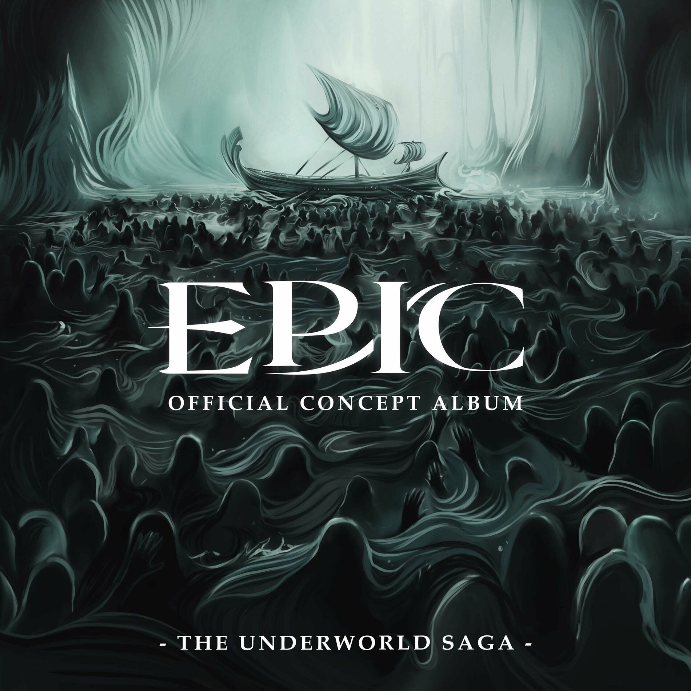

| Monster | |
|---|---|
|  | |
| Song Information | |
| Song Nr. | 20 |
| Akt (Saga) | Akt 1 (Unterwelt Saga) |
| Gesungen von: | Michael Hinterlechner |
| Epic: German Ensemble | |
| Charaktere | Odysseus |
| Griechische Soldaten | |
| Übersetzt von | |
| Chronologie | |
| Vorheriger | Nicht mehr du |
| Nächster: | Qualen (Donner Saga, Akt 2) |
Monster
Monster ist der dritte und letzte Song der Unterwelt Saga. In diesem Song bemerkt Odysseus, was er werden muss um es lebendig nach Hause zu schaffen. Dieser Song dient als Finale für den ersten Akt von EPIC.
Songtext
| Original Text | Deutscher Text |
|---|---|
|
[ODYSSEUS] How has everything been turned against us? How did suffering become so endless? How am I to reunite with my estranged? Do I need to change? I'm surrounded by the souls of those I've lost I'm the only whose line I haven't crossed What if the greatest threat we'll find across the sea Is me? What if I'm the monster? What if I'm in the wrong? What if I'm the problem that's been hiding all along? What if I'm the one who killed you Every time I caved to guilt? What if I've been far to kind to foes But a monster to ourselves? What if I'm the monster Is the cyclops struck with guilt when he kills? Is he up in the middle of the night? Or does he end my men to avenge his friend And then sleep knowing he has done him right? When the witch turns men to pigs, to protect her nymphs Is she going insane? Or did she learn to be colder when she got older and now she saves them the pain? When a god comes down and makes a fleet drown Is he scared that he's doing something wrong? Or does he keep us in check so we must respect him And now no one dares to piss him off? Does a soldier use a wooden horse to kill sleeping trojans cause he is vile? Or does he throw away his remorse and save more lives with guile If I became the monster, and threw that guilt away Would that make us stronger? Would it keep our foes at bay? If I became the monster to everyone but us And made sure we got home again Who would care if we're unjust If I became the [SOLDATEN] Monster [ODYSSEUS] Oh, ruthlessness is mercy upon ourselves [SOLDATEN] Monster [ODYSSEUS, SOLDATEN, ALLE] And deep down I know this well I lost my best friend, I lost my mentor, my mom, 500 men gone, this can't go on! I must get to see Penelope and Telemachus so if we must sail through dangerous oceans and beaches, I'll go where Poseidon won't reach us, and if I got a drop another infant from a wall in an instant so we all don't die Then I'll become the monster!, I'll deal the blow! And I'll become the monster like none they've ever known! So what if I'm the monster lurking deep below? I must become the monster and then we'll make it home! Monster Penelope Monster Telemachus Monster Oh, ruthlessness is mercy upon ourselves Monster I'll become the monster |
Trivia
- Die Melodie ist aus einem gestrichenen Song mit Elpenor, dem Kameraden der auf Kirke's Insel gestorben ist, namens Cope with that.
- Die ersten paar Sekunden sind eine intensivere Version von dem eröffnungs Score von Das Pferd und der Säugling.
- Die E-Gitarren Läufe am Anfang vom Song sind ähnlich wie der Chor nach dem zweiten Chorus von Denkt stets an sie.
- Der Tag bevor das Veröffentlichungsdatum von der Unterwelt Saga veröffentlicht wurde, war der 1. April. Und wie man das am 1. April so macht, spielte Jorge dem Internet einen Streich und veröffentlichte eine Parodie Version von Monster, weil die echte Version zu dunkel und brutal sei. Die Parodie Version wurde seither ein Meme im ganzen Fandom.
- Mehrere antike Quellen behaupten, dass Astyanax, der Sohn von Hektor, umgebracht wurde in dem er die trojanische Stadtmauer geworfen wurde. In diesem Song wird enthüllt, dass das auch die gewählte Methode in Epic ist.